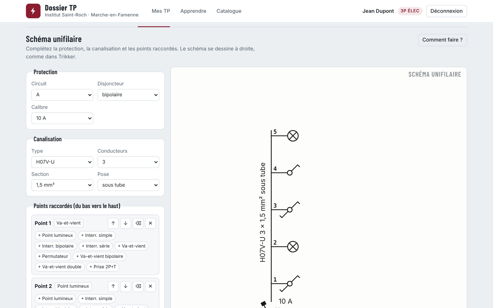
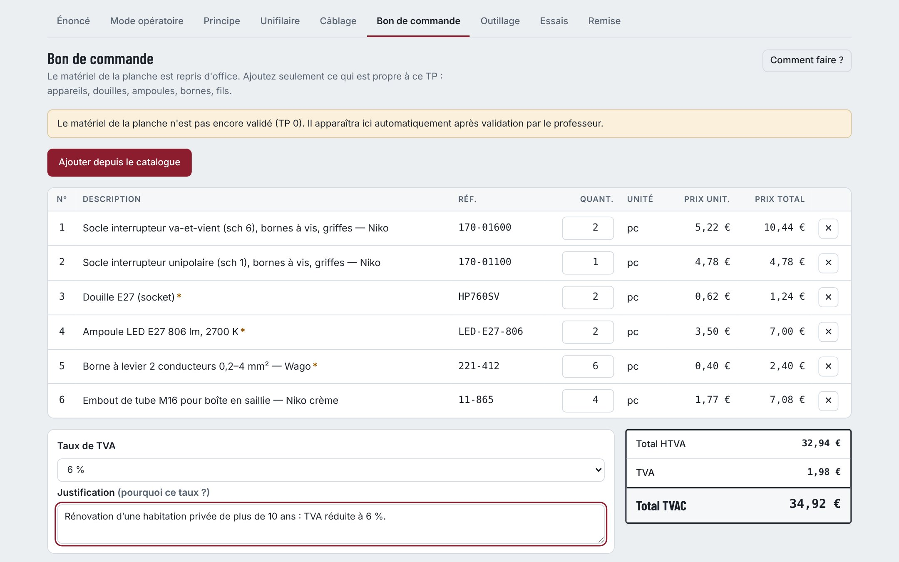
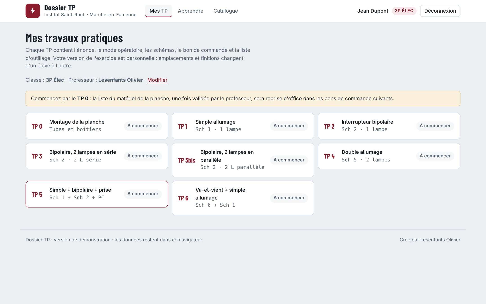

Le dossier de TP, de l’énoncé au bon de commande.
Tout ce qu’il faut pour un travail pratique d’électricité du bâtiment, dans une seule application : l’énoncé, le mode opératoire, les trois schémas, le bon de commande, l’outillage, les essais et la remise avec la photo du montage. Créé pour les élèves de 3e professionnelle électricité.


La planche de l’atelier, à l’écran
L’élève place les appareils aux emplacements de l’énoncé, pose les douilles, puis tire chaque fil dans les tubes. Dans la boîte de dérivation, chaque point correspond à une borne Wago.
- Conducteurs brun, noir, gris, bleu et vert-jaune
- Vue réaliste ou vue symboles, zoom sur la boîte
- Énoncé personnel : emplacements et finitions changent d’un élève à l’autre
Principe et unifilaire, à la façon Trikker
Le schéma de principe se dessine entre L1 et N avec les symboles. Pour l’unifilaire, l’élève choisit la protection, la canalisation et les points raccordés : le schéma se trace tout seul.
- Disjoncteur, calibre, type et section de conducteur, mode de pose
- Schéma fait à la main joint en photo ou en PDF, en plus
- Impression de tout le dossier en une fois

Un vrai bon de commande, TVA comprise
Le matériel se choisit dans le catalogue : appareillage Niko par couleur de finition, boîtiers, connexions, canalisations, fils et protection. L’élève règle les quantités, choisit le taux de TVA et justifie son choix.
- Matériel de la planche repris d’office après validation du TP 0
- Catalogue et prix modifiables par le professeur
- Totaux HTVA, TVA et TVAC calculés
Mode opératoire et essais
Les étapes à cocher, chacune reliée à sa fiche. Puis les mesures hors tension au multimètre et, si le montage ne fonctionne pas du premier coup, une fiche de dépannage.
Suivi par le professeur
Chaque professeur voit ses classes et ses élèves, valide, corrige et rend les dossiers. Les données restent dans le Google Sheet de l’école.
Hors connexion
Le travail s’enregistre sur l’appareil et part tout seul dès qu’il y a internet. Les élèves se connectent avec leur compte Google de l’école.

Pensé pour une école, adaptable à la vôtre
Dossier TP est utilisé à l’Institut Saint-Roch de Marche-en-Famenne, avec les comptes Google de l’école. Pour l’utiliser dans votre établissement, prenez contact : une démonstration permet de voir ensemble ce qu’il faut prévoir.
Dossier TP dans votre école ?
Écrivez à OL Élec : une démonstration en ligne ou dans votre établissement peut être organisée pour votre équipe.